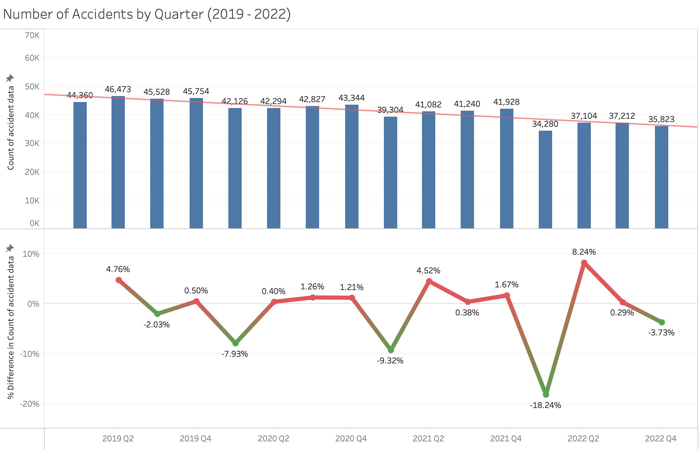
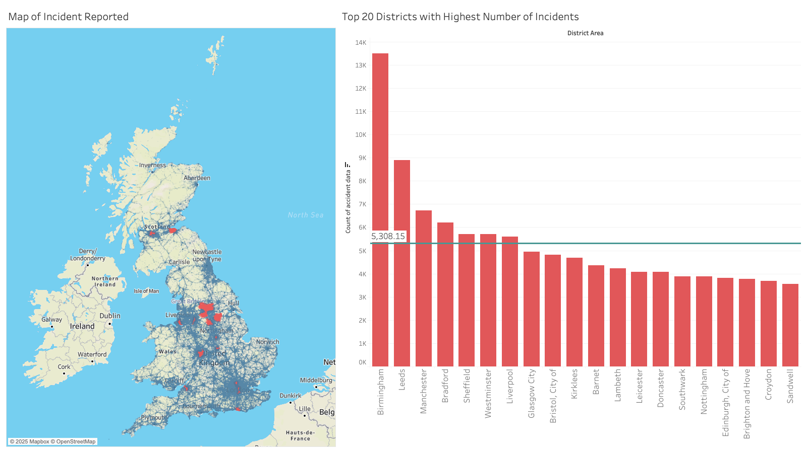
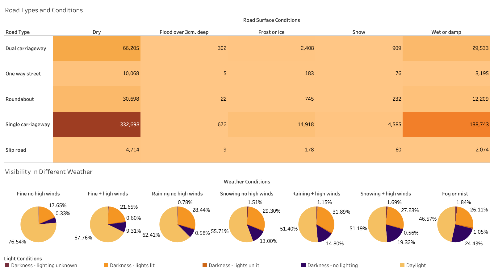
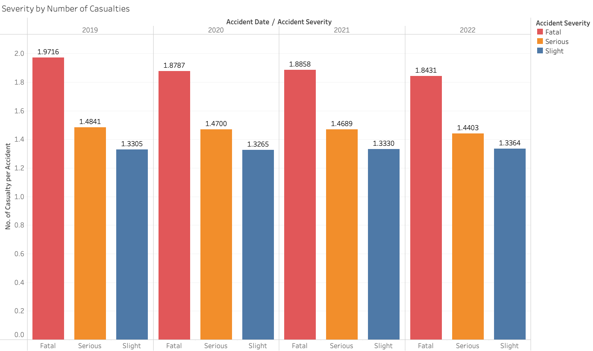
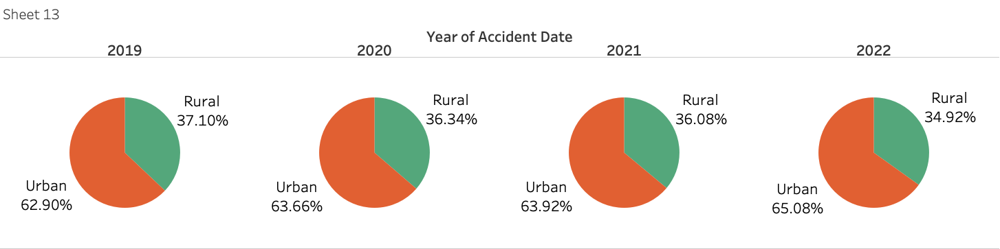

Road accidents concern in UK
Road traffic accidents are a clear public safety concern occurring in the United Kingdom, unfortunately resulting in thousands of fatalities, serious injuries and economic losses annually. The UK Department for Transport (2023) reports 1,558 fatalities and 27,450 serious injuries on the UK roads in 2023. It is essential that the root causes of the incidents are addressed, as this will improve the safety of the road, optimize the economy and most importantly reduce the amount of accident casualties (Peden, Sleet, Mohan 2020). Through a thorough statistical analysis, the project will provide valuable insights to ensure the issue can be addressed accordingly.
Exploring the root cause through analytics

The bar chart shows the number of accidents while the line chart demonstrates the percentage of difference by quarter from the 2019 to 2022 period. Overall, there is a downward trend in the number of accidents, reducing from 44,360 to 35,823 cases per quarter. Noticeably, there is a significant decrease in the first quarter of each year with the highest of -18,24% in 2022. However, accidents tend to reinstate in the second quarter with the highest increase of 8.24% in 2022. Using linear regression as predictive models, a slope of -7.416 and intercept of 368,709 can be interpreted as nearly 7.5 accidents are reduced per day.

During the examination of geographical mapping, the top 20 districts area with highest accident numbers, highlighted in red dot, are considered since they are metropolitan areas with dense traffic. It can be inferred that Birmingham and Leeds appear to stand out being black spots for traffic users where 13,491 and 8,898 accidents occurred over the four-year period. It also raises concern for Birmingham when it records 2.5 times the average number of other metros (5,308) and 8.6 times average of the entire UK (1,566).
As the UK is known for its moist and temperate weather, we will closely examine the road and weather conditions that may affect or cause these incidents. A combination of heatmap and pie chart is employed to identify the determining factors.

The heatmap highlights accidents tend to happen in single carriageway with 332,698 incidents in dry road and 138,743 in wet or damp road. Meanwhile, the pie charts reveal accidents majorly occur in the most ideal driving condition such as fine weather and clear daylight. In fine weather without high wind, the fact that 76.54% of vehicular impact occurs in daylight signifies the importance of driver behavior and awareness in their daily commute.
Therefore, direct safety measures can be implemented such as increasing the number of road signs with reflective materials, using real time adjusted traffic control, enforcing lower speed limits in high-risk zones, and installing more speed and red-light cameras. These initiatives can deliver immediate results, especially in the populated area mentioned above; however, the cost of new infrastructure can quickly add-up and lessen the scalability of this project.

A calculated field created with the number of casualties being divided by number of accidents and marked by severity type shows how intense it can be in a traffic accident. Remarkably, the figure of 1.97 casualties per accident in a fatal collision in 2019 has dropped down to 1.84 in 2022. This suggests that safety features on vehicles have advanced over the year, deflecting the impact and reducing the severity of the accident. Therefore, transportation agencies can use this profound information and promote vehicles with high protection standards, such as five-star ANCAP rating. Especially, we could encourage parents to buy their teenagers a decent car with safety features as they are inexperienced drivers.

When analysing the different regulation settings, two thirds of accidents, from 62.90% to 65.08%, happen on urban roads. This can be explained by several factors such as road design, peak-hour, visual obstacles, and mixed used of vehicle. Recent studies show 27% of accidents are caused by slow driving (Harrington, P, Thomas, P & Dunne, C 2021). More importantly, the urban characteristic can increase driver stress level and anxiety that lead to fatigue as travelling time increases during peak hour.
Prevention through behavioral reinforcement
As a part of effective planning, encouraging mixed travelling modes or in between recess in a large-scale campaign with extensive time span can gradually alternate driver awareness for their own safety. On a broader scale, the government could consider increasing supervised driving for learners up to 60 hours with 15 hours dedicated to inner city driving, compared to the current standard of 45 hours. Regulatory incentives such as free renewal of license if drivers have not received any demerit points in the last two years can promote positive reinforcement toward behavioral change.
In conclusion, the data reveals that most accidents occur under fine weather and clear daylight conditions, suggesting that external factors like road conditions or visibility are not the primary causes. Moreover, the analysis revealed that road design, high traffic during peak-hours, and visual obstacles are the major factors resulting in occurrence of two-third of the accidents on the urban roads. Additionally, the other reasons for more accidents in urban areas are due to congestion, stress, and fatigue – further emphasizing the need to address driver habits rather than solely relying on infrastructure upgrades.